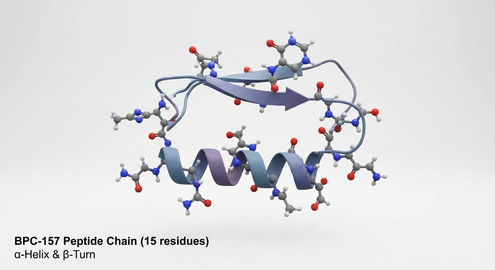
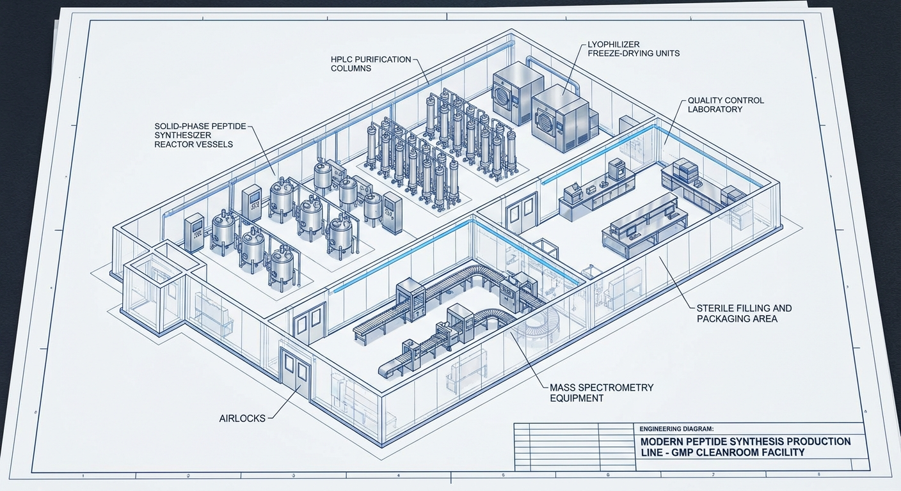
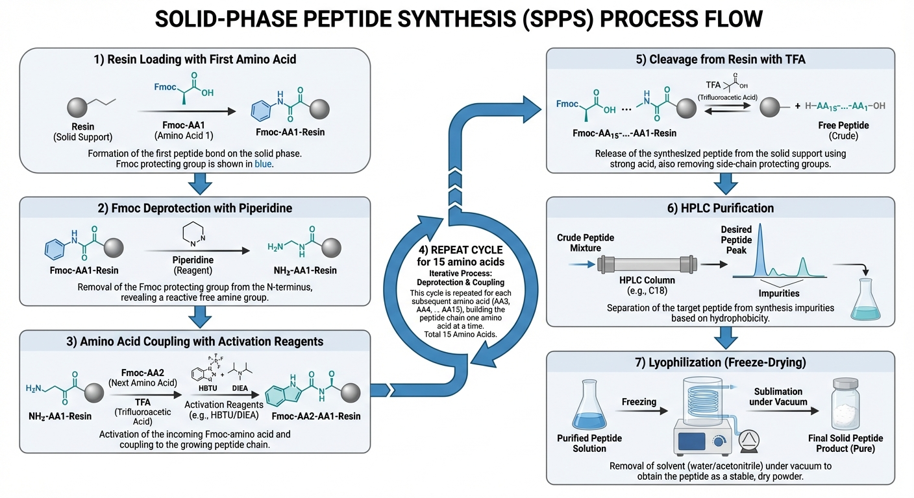
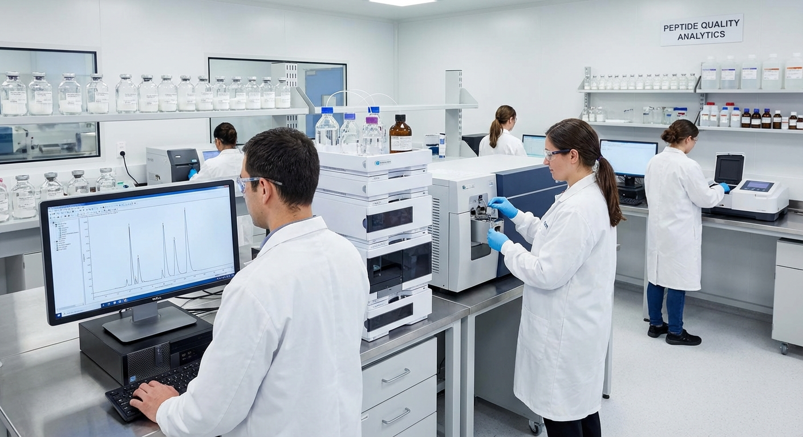
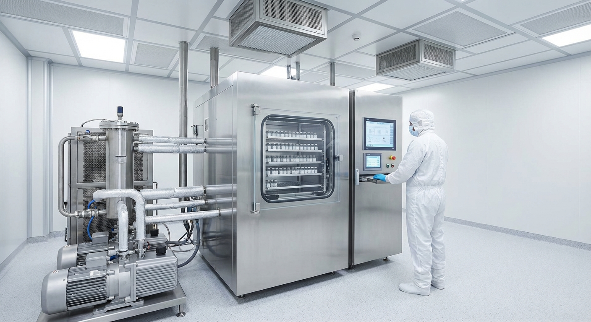

BPC-157 (Body Protection Compound-157) to syntetyczny pentadekapeptyd (15 aminokwasów) pochodzący z fragmentu ludzkiego białka ochronnego żołądka (BPC). Peptyd wykazuje niezwykłą stabilność w soku żołądkowym — pozostaje nienaruszony przez ponad 24 godziny.
| Nazwa systematyczna | BPC-157 (Body Protection Compound-157) |
|---|---|
| PubChem CID | 9941957 |
| Sekwencja | Gly-Glu-Pro-Pro-Pro-Gly-Lys-Pro-Ala-Asp-Asp-Ala-Gly-Leu-Val |
| Jednoliterowa | GEPPPGKPADDAGLV |
| Wzór sumaryczny | C₆₂H₉₈N₁₆O₂₂ |
| Masa molekularna | 1419.53 Da |
| Punkt izoelektryczny (pI) | ~4.2 |
| Rozpuszczalność | Rozpuszczalny w wodzie i DMSO |
| Stabilność | >24h w soku żołądkowym (pH 1-2) |
| Pochodzenie | Fragment ludzkiego białka ochronnego żołądka |
| Status regulacyjny | Niezatwierdzony — wyłącznie do badań |
Poniżej interaktywna wizualizacja sekwencji BPC-157. Kolory oznaczają typ aminokwasu. Najedź myszką na aminokwas, aby zobaczyć szczegóły.
BPC-157 ma nietypową kompozycję — aż 3 reszty prolinowe (pozycje 3-5) tworzą sztywny segment poliproliny, co nadaje peptydowi charakterystyczną strukturę przestrzenną. Dwie reszty kwasu asparaginowego (Asp10-Asp11) tworzą region ujemnie naładowany, kluczowy dla aktywności biologicznej.

Poniżej zaprojektowana linia produkcyjna dla syntezy BPC-157 w skali GMP (Good Manufacturing Practice). Linia oparta na technologii Solid-Phase Peptide Synthesis (SPPS) z wykorzystaniem chemii Fmoc.


Żywica Wang lub Rink Amide (0.3-0.7 mmol/g) jest kondycjonowana w DMF. Pierwszy aminokwas (Fmoc-Val-OH) jest sprzęgany z żywicą przy użyciu HATU/DIPEA.
Usunięcie grupy ochronnej Fmoc z końca N aminokwasu na żywicy przy użyciu 20% piperydyny w DMF (2 × 5 min).
Aktywacja Fmoc-aminokwasu (3-5 ekw.) z HATU/HOBt i DIPEA, następnie sprzęganie z wolną grupą aminową na żywicy.
Cykle deprotekcji i sprzęgania powtarzane 14 razy (15 aminokwasów - 1). Automatyczny syntezator peptydów kontroluje cały proces.
Koktajl TFA/TIS/H₂O (95:2.5:2.5) jednocześnie odcina peptyd od żywicy i usuwa wszystkie grupy ochronne łańcuchów bocznych.
Surowy peptyd rozpuszczony w wodzie/acetonitryle i oczyszczany na kolumnie C18 preparatywnej HPLC z gradientem ACN/H₂O + 0.1% TFA.
Oczyszczony peptyd w roztworze zamrażany i suszony pod próżnią. Rezultat: biały, puszysty proszek o długiej stabilności.
Kompleksowa analityka zgodna z wymaganiami GMP przed zwolnieniem serii do pakowania.


| Parametr | Specyfikacja |
|---|---|
| Wygląd | Biały do białawego liofilizowany proszek |
| Tożsamość (MS) | MW = 1419.53 ± 1.0 Da |
| Czystość (HPLC) | ≥ 95.0% (UV 220nm) |
| Zawartość peptydowa | ≥ 80% (analiza aminokwasowa) |
| Zawartość wody | ≤ 5.0% (Karl Fischer) |
| Zawartość octanu | ≤ 15.0% (IC) |
| Endotoksyny | < 0.25 EU/mg (LAL) |
| Bioburden | < 1 CFU/mg |
| TFA resztkowe | < 0.1% (IC / ¹⁹F NMR) |
| Metale ciężkie | < 10 ppm (ICP-MS) |
| Rozpuszczalniki resztkowe | Zgodnie z ICH Q3C |
| Przechowywanie | -20°C, suchy, chroniony przed światłem |
| Stabilność | ≥ 24 miesiące (-20°C, liofilizat) |
| Etap | CPP |
|---|---|
| Sprzęganie | Stosunek molowy aminokwasu (3-5 eq), czas reakcji, temperatura |
| Deprotekcja | Stężenie piperydyny, czas ekspozycji, kompletność (UV) |
| Odcinanie | Stężenie TFA, czas, temperatura, kompozycja scavengerów |
| HPLC | Profil gradientu, przepływ, temperatura kolumny, czystość frakcji |
| Liofilizacja | Temperatura zamrażania, ciśnienie komory, profile rampy cieplnej |
Kalkulacja dla serii produkcyjnej o skali 100g surowego peptydu (wydajność końcowa ~30-50g po oczyszczaniu).
| Pozycja | Koszt (EUR) | Uwagi |
|---|---|---|
| Aminokwasy Fmoc (15 szt. × nadmiar) | 8 000 – 15 000 | Zależy od dostawcy i skali |
| Żywica Wang/Rink Amide | 2 000 – 4 000 | 0.3-0.7 mmol/g loading |
| Reagenty sprzęgające (HATU, HOBt, DIPEA) | 3 000 – 5 000 | Nadmiar 3-5x |
| Rozpuszczalniki (DMF, DCM, ACN, TFA) | 4 000 – 6 000 | Duże zużycie na skalę 100g |
| Piperydyna (deprotekcja) | 500 – 1 000 | 20% roztwór w DMF |
| Kolumny HPLC + materiały | 2 000 – 3 000 | Prep C18 + analityczne |
| Materiały opakowaniowe | 1 000 – 2 000 | Fiolki, korki, etykiety |
| Razem materiały | 20 500 – 36 000 |
| Urządzenie | Koszt (EUR) | Uwagi |
|---|---|---|
| Automatyczny syntezator peptydów (np. Liberty Blue) | 150 000 – 350 000 | Mikrofalowy — szybsze sprzęganie |
| System preparatywnej HPLC | 100 000 – 250 000 | Z kolektorem frakcji |
| System analityczny HPLC-MS | 200 000 – 400 000 | ESI-TOF dla potwierdzenia MW |
| Liofilizator produkcyjny | 80 000 – 200 000 | Powierzchnia półek ≥2 m² |
| Infrastruktura cleanroom (klasa D/C) | 200 000 – 500 000 | HVAC, HEPA, monitoring |
| Pozostałe (wagi, pH-metry, Karl Fischer, LAL) | 50 000 – 100 000 | |
| Razem inwestycja | 780 000 – 1 800 000 |
Proponowany układ przestrzenny zakładu produkcyjnego w standardzie GMP, z wydzielonymi strefami czystości i logicznym przepływem materiałów.
Powierzchnia łączna zakładu: ~600-800 m². Przepływ materiałów jednokierunkowy (magazyn → synteza → oczyszczanie → liofilizacja → pakowanie). Laboratorium QC oddzielone od produkcji z niezależnym wejściem.